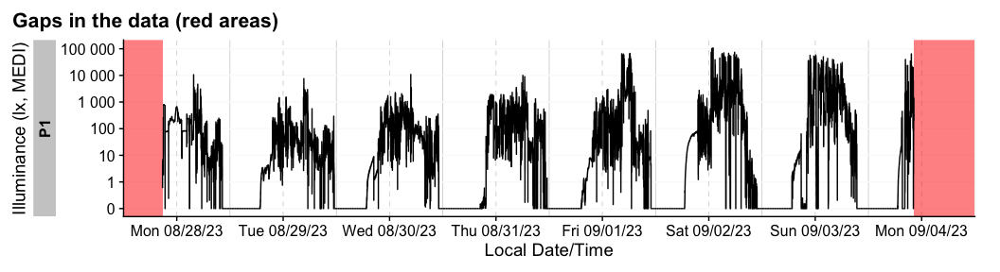

Personalized luminous exposure data is progressively gaining importance in various sectors, including research, occupational affairs, and fitness tracking. Data are collected through a proliferating selection of wearable loggers and dosimeters, varying in size, shape, functionality, and output format. Despite or maybe because of numerous use cases, the field lacks a unified framework for collecting, validating, and analyzing the accumulated data. This issue increases the time and expertise necessary to handle such data and also compromises the FAIRness (Findability, Accessibility, Interoperability, Reusability) of the results, especially in meta-analyses.

LightLogR is a package under development as part of the MeLiDos project to address these issues. The package aims to provide tools for:
Import from common measurement devices (see below for a list of Supported devices)
Cleaning and processing of light logging data
Visualization of light exposure data, both exploratory and publication ready
Calculation of common analysis parameters (see below for a list of Metrics)
To come:
Import, creation, and verification of crucial metadata
Semi-automated analysis and visualization (both command-line and GUI-based)
Integration of data into a unified database for cross-study analyses
Please note that LightLogR is work in progress! If you are interested in the project and want to know more, you can subscribe to the LightLogR mailing list. If you find a bug or would like to see new or improved features, please open an issue on the GitHub repository.
Have a look at the Example section down below to get started, or dive into the Articles to get more in depth information about how to work with the package and generate images such as the one above, import data, visualization, and metric calculation.
Installation
You can install LightLogR from CRAN with:
install.packages("LightLogR")You can install the latest development version of LightLogR from GitHub with:
# install.packages("devtools")
devtools::install_github("tscnlab/LightLogR")Example
Here is a quick starter on how to use LightLogR.
library(LightLogR)
#the following packages are needed for the examples as shown below.
library(flextable)
library(dplyr)
library(ggplot2)Import
You can import a light logger dataset with ease. The import functions give quick, helpful feedback about the dataset.
filename <-
system.file("extdata/205_actlumus_Log_1020_20230904101707532.txt.zip",
package = "LightLogR")
dataset <- import$ActLumus(filename, "Europe/Berlin", manual.id = "P1")
#>
#> Successfully read in 61'016 observations across 1 Ids from 1 ActLumus-file(s).
#> Timezone set is Europe/Berlin.
#>
#> First Observation: 2023-08-28 08:47:54
#> Last Observation: 2023-09-04 10:17:04
#> Timespan: 7.1 days
#>
#> Observation intervals:
#> Id interval.time n pct
#> 1 P1 10s 61015 100%
For more complex data, there is the useful gg_overview() function to get an immediate grasp of your data. It was automatically called during import (set auto.plot = FALSE to suppress this), but really shines for datasets with multiple participants. It also indicates where data is missing, based on the measurement epochs found in the data.
note: the above example image requires a large dataset, not included in the package. It is available, however, in the article on Import & cleaning.
Visualize
Once imported, LightLogR has many convenient visualization options.

There is a wide range of options to the gg_days() function to customize the output. Have a look at the reference page (?gg_days) to see all options. You can also override most of the defaults, e.g., for different color, facetting, theme options. Helper functions can prepare the data (e.g. to aggregate it to coarser intervals), or to add to the plot (e.g., to add conditions, such as nighttime)
dataset |>
#change the interval from 10 seconds to 15 minutes:
aggregate_Datetime("15 min") |>
#create groups of 3-hour intervals:
cut_Datetime("3 hours") |>
#plot creation, with a boxplot:
gg_days(geom = "boxplot", group = Datetime.rounded) |>
#adding nighttime indicators:
gg_photoperiod(c(47.9,9)) +
# the output is a standard ggplot, and can be manipulated that way
geom_line(col = "red", linewidth = 0.25) +
labs(title = "Personal light exposure across a week",
subtitle = "Boxplot in 3-hour bins")
More than one dataset
The built-in dataset sample.data.environment shows a combined dataset of light logger data and a second set of data - in this case unobstructed outdoor light measurements. Combined datasets can be easily visualized with gg_day(). The col parameter used on the Id column of the dataset allows for a color separation.
sample.data.environment %>%
gg_day(
start.date = "2023-09-01",
aes_col = Id,
geom = "line") +
theme(legend.position = "bottom")
#> Only Dates will be used from start.date and end.date input. If you also want to set Datetimes or Times, consider using the `filter_Datetime()` function instead.
gg_day() will show plots always facetted by day, whereas gg_days() shows a timeline of days for each group. Both functions are opinionated in terms of the scaling and linebreaks to only show whole days, all of which can be adjusted.
There are many ways to enhance the plots - if, e.g., we look for periods of at least 1 hour above 250 lx, we can add and then visualize these periods easily
sample.data.environment %>%
#search for these conditions:
add_clusters(MEDI > 250, cluster.duration = "30 min") |>
#base plot + add the condition
gg_days() |>
gg_state(state, fill = "red") +
#standard ggplot:
geom_hline(yintercept = 250, col = "red", linetype = "dashed") +
labs(title = "Periods > 250 lx mel EDI for more than 30 minutes")
There are more visualizations to try - the article on Visualizations dives into them in-depths.
sample.data.environment |> gg_heatmap(doubleplot = "next")
Metrics
There are many Metrics used in literature for condensing personalized light exposure time series to singular values. LightLogR has a rather comprehensive number of these metrics with a consistent, easy-to-use interface.
sample.data.environment |> # two groups: participant and environment
filter_Date(length = "2 days") |> #filter to three days each for better overview
group_by(Day = lubridate::date(Datetime), .add = TRUE) |> #add grouping per day
summarize(
#time above 250 lx mel EDI:
duration_above_threshold(MEDI, Datetime, threshold = 250, as.df = TRUE),
#intradaily variability (IV):
intradaily_variability(MEDI, Datetime, as.df = TRUE),
#... as many more metrics as are desired
.groups = "drop"
)
#> # A tibble: 4 × 4
#> Id Day duration_above_250 intradaily_variability
#> <fct> <date> <Duration> <dbl>
#> 1 Environment 2023-08-29 48240s (~13.4 hours) 0.248
#> 2 Environment 2023-08-30 49350s (~13.71 hours) 0.168
#> 3 Participant 2023-08-29 5810s (~1.61 hours) 1.23
#> 4 Participant 2023-08-30 9960s (~2.77 hours) 0.821Other types of metrics can be derived less formally by the durations(), extract_state() or extract_cluster() function.
dataset |>
gap_handler(full.days = TRUE) |> #extend the viewed time until midnight of the first and last day
durations(MEDI, show.missing = TRUE)
#> # A tibble: 1 × 4
#> # Groups: Id [1]
#> Id duration missing total
#> <fct> <Duration> <Duration> <Duration>
#> 1 P1 610160s (~1.01 weeks) 81040s (~22.51 hours) 691200s (~1.14 weeks)
dataset |>
group_by(TAT250 = MEDI >= 250, .add = TRUE) |> #creating a grouping column that checks for values above 250lx
durations(MEDI)
#> # A tibble: 2 × 3
#> # Groups: Id, TAT250 [2]
#> Id TAT250 duration
#> <fct> <lgl> <Duration>
#> 1 P1 FALSE 498530s (~5.77 days)
#> 2 P1 TRUE 111630s (~1.29 days)The second row indicates where this status is true. This will be identical to:
dataset |>
summarize(
duration_above_threshold(MEDI, Datetime, threshold = 250, as.df = TRUE),
.groups = "drop"
)
#> # A tibble: 1 × 2
#> Id duration_above_250
#> <fct> <Duration>
#> 1 P1 111630s (~1.29 days)What if we are interested in how often this threshold is crossed, and for how long?
dataset |>
extract_states(TAT250, MEDI >= 250) |> #extract a list of states
summarize_numeric() |> #summarize the numeric values
select(Id, TAT250, mean_duration, episodes, total_duration) #collect a subset
#> # A tibble: 2 × 5
#> # Groups: Id [1]
#> Id TAT250 mean_duration episodes total_duration
#> <fct> <lgl> <Duration> <int> <Duration>
#> 1 P1 FALSE 482s (~8.03 minutes) 1034 498530s (~5.77 days)
#> 2 P1 TRUE 108s (~1.8 minutes) 1034 111630s (~1.29 days)We see that there are roughly one thousand instances across the week where 250 lx was reached, but it only lasted under two minutes on average. How many long periods are there, say above 30 minutes? As there might be short interruption, that we consider irrelevant, we are ignoring interruptions of 1 minute. This is the area of clusters.
dataset |>
extract_clusters(MEDI >= 250, #base condition
cluster.duration = "30 mins", #search for at least 30 minute instances
interruption.duration = "1 min", #allow 1 minute interrupts
add.label = TRUE) |> #add a description of the conditions
group_by(label) |> #group by the label so it does not get removed next
summarize_numeric() |> #summarize the output
select(-mean_epoch) #collect a subset
#> # A tibble: 1 × 6
#> label mean_start mean_end mean_duration total_duration episodes
#> <chr> <time> <time> <Duration> <Duration> <int>
#> 1 MEDI>=… 13:50:47 15:02:14 4288s (~1.19 hours) 72890s (~20.25 hours) 17We see there are only 17 instances across the week, lasting, on average, a bit above an hour (and sitting aroung 14:00 - 15:00). Directly relating the total duration to the 1.29 days time above 250 lx from above would be misleading, however. This is because here, there are interruptions present. How prominent are these interruptions?
dataset |>
extract_clusters(MEDI >= 250, #base condition
cluster.duration = "30 mins", #search for at least 30 minute instances
interruption.duration = "1 min", #allow 1 minute interrupts
add.label = TRUE) |>
#extract the metric:
extract_metric(dataset, rel_interrupt = sum(MEDI < 250)/n()) |>
summarize_numeric(prefix = "") |> #summarize the output
select(episodes, total_duration, rel_interrupt) |> #collect a subset
mutate(interrupt_duration = (total_duration*rel_interrupt) |> round(), #calculate interrupt
rel_interrupt = rel_interrupt |> scales::percent_format(1)())
#> # A tibble: 1 × 4
#> episodes total_duration rel_interrupt interrupt_duration
#> <int> <Duration> <chr> <Duration>
#> 1 17 72890s (~20.25 hours) 4% 2918s (~48.63 minutes)Thus we find that only about 4% of the long exposure periods are made up of interruptions, or just shy of 50 minutes out of over 20 hours.
Gaps and cleaning
LightLogR provides a range of functions to get insight into your light logger data. Most importantly, you can search for and eliminate implicit gaps.
sample.data.irregular |> has_irregulars()
#> [1] TRUE
sample.data.irregular |> has_gaps()
#> [1] TRUEAt import, we already get a sense for intervals, but can always show them with count_difftime().
sample.data.irregular %>% count_difftime()
#> # A tibble: 4 × 4
#> # Groups: Id [1]
#> Id difftime n group.indices
#> <chr> <Duration> <int> <int>
#> 1 P1 15s 10015 1
#> 2 P1 16s 1367 1
#> 3 P1 17s 23 1
#> 4 P1 18s 16 1We can eliminate this through the gap_handler() function. This function will automatically fill in the gaps with NA values. The function will not impute or interpolate data. As the most dominant interval in the dataset is now not 15 seconds anymore (because intermediate datapoints have been added), we need to specify the epoch for gap_finder().
sample.data.irregular |> gap_handler() |> has_gaps(epoch = "15 secs")
#> [1] FALSEIf we want to force the data to be regular, we can use the aggregate_Datetime() function. This will aggregate the data to the specified epoch. There are sensible defaults on how to aggregate numeric, categorical, and logical data. You can also specify your own aggregation functions.
sample.data.irregular |>
aggregate_Datetime(unit = "20 sec") |>
has_gaps()
#> [1] FALSEThere are also convenient functions to extract (extract_gaps()), summarize (gap_table()) or visualize (gg_gaps()) gaps.
dataset |> gg_gaps()
#> Warning: Removed 8104 rows containing missing values or values outside the scale range
#> (`geom_line()`).
Finally, the remove_partial_data() easily gets rid of groups or days that do not provide enough data.
dataset |>
remove_partial_data(MEDI, #variable for which to check missingness
threshold.missing = "2 hours", #remove when more than 2 hours are missing
by.date = TRUE, #check the condition per day, not the whole participant
handle.gaps = TRUE) |> #go beyond the available data to midnight of the first and last day
gg_days()Supported devices
At present, these are the devices we support in LightLogR:
Actiwatch_Spectrum
Actiwatch_Spectrum_de
ActLumus
ActTrust
Circadian_Eye
Clouclip
DeLux
GENEActiv_GGIR
Kronowise
LiDo
LightWatcher
LIMO
LYS
MotionWatch8
nanoLambda
OcuWEAR
Speccy
SpectraWear
VEET
More Information on these devices can be found in the reference for import_Dataset(). If you want to know how to import data from these devices, have a look at our article on Import & Cleaning.
If you are using a device that is currently not supported, please contact the developers. We are always looking to expand the range of supported devices. The easiest and most trackable way to get in contact is by opening a new issue on our Github repository. Please also provide a sample file of your data, so we can test the import function.
Metrics
LightLogR supports a wide range of metrics across different metric families. You can find the full documentation of metrics functions in the reference section. There is also an overview article on how to use Metrics.
| Metric Family | Submetrics | Note | Documentation |
|---|---|---|---|
| Barroso | 7 | barroso_lighting_metrics() |
|
| Bright-dark period | 4x2 | bright / dark | bright_dark_period() |
| Centroid of light exposure | 1 | centroidLE() |
|
| Dose | 1 | dose() |
|
| Disparity index | 1 | disparity_index() |
|
| Duration above threshold | 3 | above, below, within | duration_above_threshold() |
| Exponential moving average (EMA) | 1 | exponential_moving_average() |
|
| Frequency crossing threshold | 1 | frequency_crossing_threshold() |
|
| Intradaily Variance (IV) | 1 | intradaily_variability() |
|
| Interdaily Stability (IS) | 1 | interdaily_stability() |
|
| Midpoint CE (Cumulative Exposure) | 1 | midpointCE() |
|
| nvRC (Non-visual circadian response) | 4 |
nvRC(), nvRC_circadianDisturbance(), nvRC_circadianBias(), nvRC_relativeAmplitudeError()
|
|
| nvRD (Non-visual direct response) | 2 |
nvRD(), nvRD_cumulative_response()
|
|
| Period above threshold | 3 | above, below, within | period_above_threshold() |
| Pulses above threshold | 7x3 | above, below, within | pulses_above_threshold() |
| Threshold for duration | 2 | above, below | threshold_for_duration() |
| Timing above threshold | 3 | above, below, within | timing_above_threshold() |
| Total: | |||
| 17 families | 61 metrics |
If you would like to use a metric you don’t find represented in LightLogR, please contact the developers. The easiest and most trackable way to get in contact is by opening a new issue on our Github repository.
About the creation and funding of LightLogR
LightLogR is developed by the Translational Sensory & Circadian Neuroscience lab, a joint group from the Technical University of Munich and the Max Planck Institute for Biological Neuroscience Unit (MPS/TUM/TUMCREATE)*, a joint group based at the Technical University of Munich, TUMCREATE, the Max Planck Institute for Biological Cybernetics.
MeLiDos is a joint, EURAMET-funded project involving sixteen partners across Europe, aimed at developing a metrology and a standard workflow for wearable light logger data and optical radiation dosimeters. Its primary contributions towards fostering FAIR data include the development of a common file format, robust metadata descriptors, and an accompanying open-source software ecosystem.
The project (22NRM05 MeLiDos) has received funding from the European Partnership on Metrology, co-financed from the European Union’s Horizon Europe Research and Innovation Programme and by the Participating States. Views and opinions expressed are however those of the author(s) only and do not necessarily reflect those of the European Union or EURAMET. Neither the European Union nor the granting authority can be held responsible for them.
I Want To Contribute
All types of contributions are encouraged and valued. See the CONTRIBUTING section for different ways to help and details about how this project handles them. This project and everyone participating in it is governed by the LightLogR Code of Conduct.